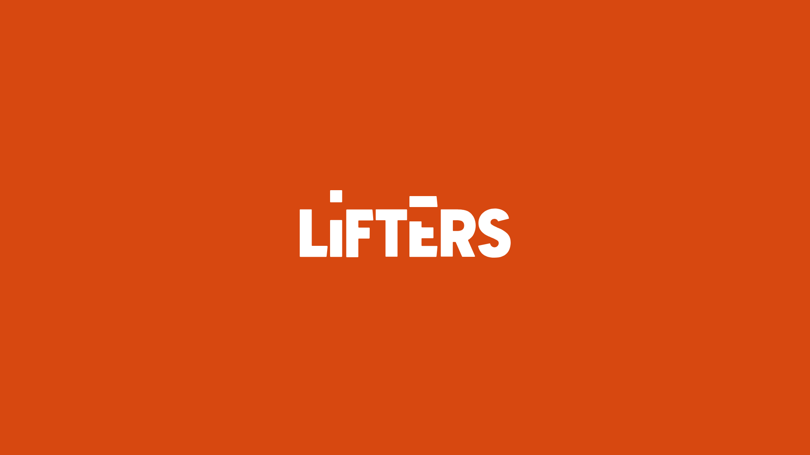
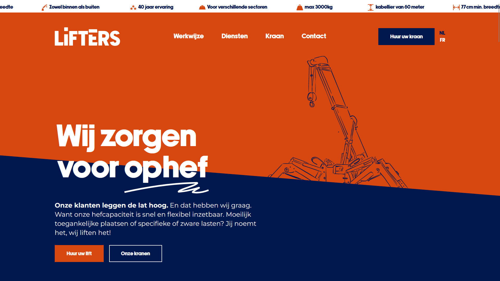
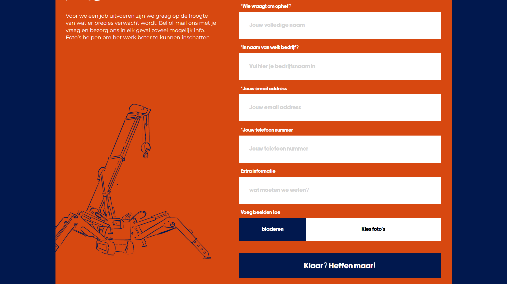

- Lifters -
mijn contributie:
- BACKEND - FRONTEND - ANIMATIONS -
Over
Het project
Lifters is een verhuurbedrijf dat gespecialiseerd is in liftkramen voor particulieren en bedrijven. Tijdens mijn stage bij Veaudeville kreeg ik als eerste opdracht de verantwoordelijkheid om een volledig nieuwe website voor dit bedrijf te ontwikkelen.
Het ontwerp werd aangeleverd, maar de uitwerking lag volledig in mijn handen. Ik bouwde de website vanaf nul en zorgde ervoor dat deze niet alleen functioneel, maar ook visueel aantrekkelijk en gebruiksvriendelijk was. Een belangrijk aspect van dit project was het leren werken met animaties om de website dynamischer en interactiever te maken. Hiervoor gebruikte ik de AOS-library (Animate On Scroll) in combinatie met CSS- en JavaScript-animaties.
Gebruikte technologiën
HTML/CSS - PHP MAILER - CSS animations - Jquery - Javascript
Media

Introanimatie bij het starten van de site.

De landingspagina van Lifters.

Een contactformulier gemaakt aan de hand van een mail systeem.
Meer
Mijn aanpak
Voor de website van Lifters begon ik met het analyseren van het ontwerp en het opstellen van een plan voor de code-structuur en functionaliteiten. Ik gebruikte HTML, CSS en Jquery om de basis op te zetten, en voegde animaties toe met de AOS-library en aan de hand van CSS animaties.
Tijdens het ontwikkelen testte ik de website op verschillende apparaten en browsers om een optimale gebruikerservaring te creëren. Ik werkte samen met het team om feedback door te voeren en het eindproduct af te ronden. Deze aanpak stelde me in staat om het project efficiënt te voltooien en nieuwe Animatie technieken te leren.